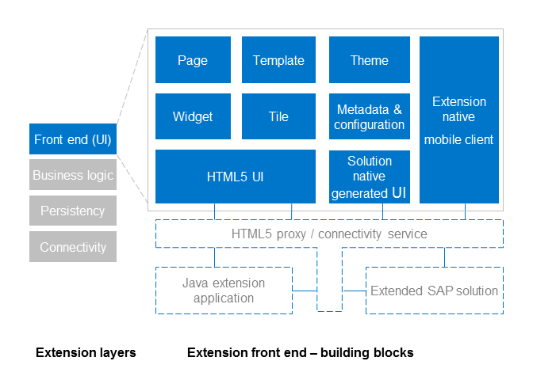

An extension application usually consists of several layers. There is a front-end UI layer decoupled from the back end by OData, REST, or JSON services.
To achieve smooth retheming and rebranding, you implement the front end UI layer using SAPUI5. You can also use any HTML5 or JavaScript UI framework.
SAP Cloud Platform offers various tools and capabilities to help you create, customize, and integrate your extension front-end components.
Content – the actual business application wrapped as a widget or a tile
Structure – navigation, pages, layout, templates, and themes, and other
Metadata – metadata such as configuration information
Mobile client - either a native client wrapping an HTML5 UI or a truly native mobile client
The following graphic provides an overview of the building blocks of the extension application front end:

Extensions usually aggregate data from multiple different business systems by combining multiple application widgets on one or multiple pages. If you have to combine data and need to apply additional security checks, then you usually define a higher level back-end services in Java or XS, aggregating the required data and exposing it with a new REST, JSON or OData API to the UI tier.
The extension application UI can be based on the solution’s native UI technology (by leveraging solution-native genarted UIs) or on HTML5. The latter can either be served out of the Java or XS layer or most commonly, can leverage the SAP Cloud Platform HTML5 application infrastructure, thus ensuring clear decoupling between UI and back-end services.
There are different native custumization options available with the SAP solutions. Most commonly, you can adjust the user interface by changing the initial product configuration, by adjusting object metadata, by manipulating field and operation visibility or by defining custom business objects. These customization options do not require any coding on the frond-end tier since the resulting UI is generated natively in the extended solution.
To achieve smooth retheming and rebranding, you leverage SAPUI5 for the extension UI. SAPUI5 allows smooth subsequent embedding of the custom UIs in the extended SAP solutions. The built-in extension and customization mechanisms of SAPUI5 make it easy to replace standard views, to customize i18N resource texts, to add new or to customize the existing navigation paths or even override existing code. Using SAPUI5 is a good practice but you can also use other popular UI frameworks.
To achieve dynamic branding and retheming of extension UIs, we recommend that you use Portal service sites configured with a corresponding template to mimic the look and feel of the extended SAP solution. Furthermore, the Portal service allows dynamic redesign of pages leveraging the Portal authoring environment.
If you decide to go beyond pure configuration and customize the UI using SAPUI5, a natural choice would be SAP Web IDE. SAP Web IDE helps you develop, test, and deploy SAPUI5 applications in your SAP Cloud Platform account, and expose your applications as widgets. It offers various extension templates such as SAPUI5 templates which you can use to start with. Based on the OData services of the extended solution and on their metadata, you can start creating and adjusting the new user interface. SAP Web IDE comes with a source code editor that helps you fine tune the generated HTML code on your own, leveraging code completion.